Process
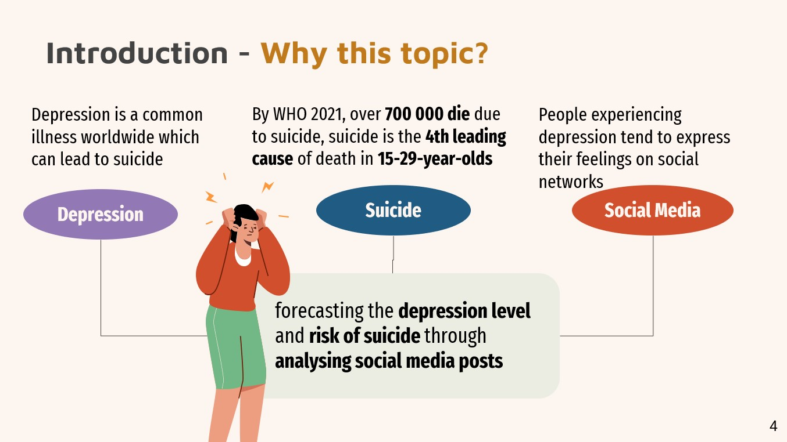Choosing the Dataset
We found many dataset on depression, but we eventually agree on the Reddit C-SSRS dataset. The C-SSRS dataset contains 500 Reddit posts from the subreddit r/depression. These posts are labeled by psychologists on a five point scale according to guidelines established in the Columbia Suicide Severity Rating Scale, which progress according to severity of depression. As this dataset is clinically verified and labeled, it is an adequate dataset to validate the label correction method, especially since it is from the same domain of mental health. Before we've done the research, we knew that depression is a serious problem in our lives, but we did not expect that there are people seeking for help using Reddit posts. The dataset was interesting, which inspired us to build models on these Reddit posts to predict depression level and help the society.
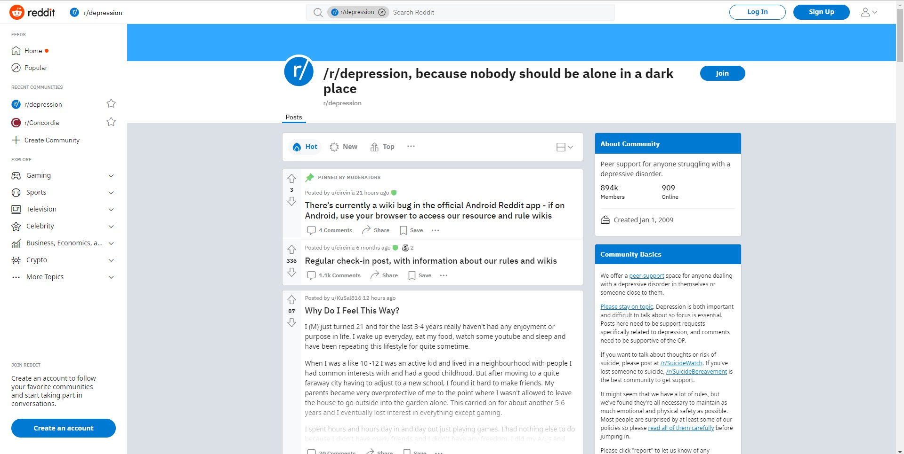There are five different labels in the dataset.
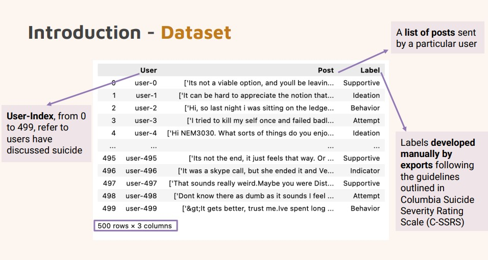 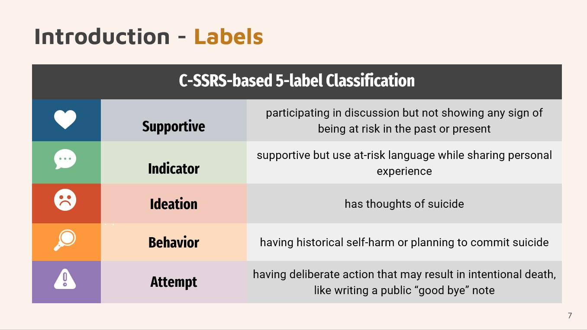We also generated word clouds for each label to find the most frequent word in the Reddit posts.
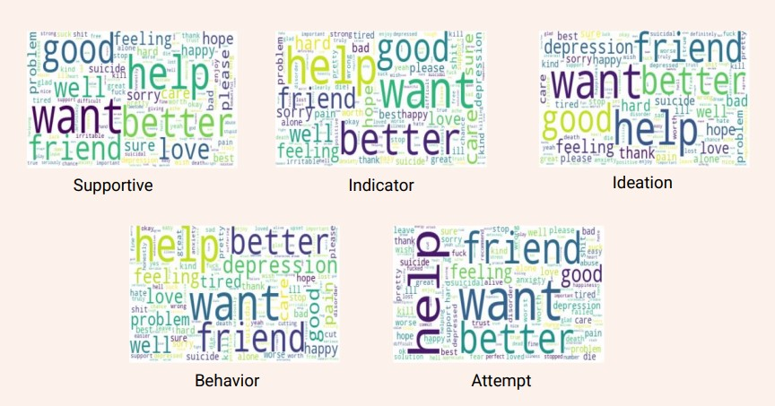Methods
We started our implementation by data preprocessing. We tokenized sentences to words from the original dataset.Then, we removed punctuations and change uppercase to lowercase from posts. After that, we used lemmatization and stemming to get an organized dataset. The second step was feature extraction. We used TF-IDF (term frequency-inverse document frequency), word frequency, n-gram, sentiment feature extraction, exclamation marks extraction, problem marks extraction, and capitalized letters extraction. We got many useful features. Then, we splited the dataset into five sets for five fold cross-validation, 80% data was used to train the model, and 20% data was used to test the model. Finally, we chose four different models to train our data, which are Linear Regression, Naive Bayes, Decision Tree, and Random Forest. We chose the best fit from these four models.
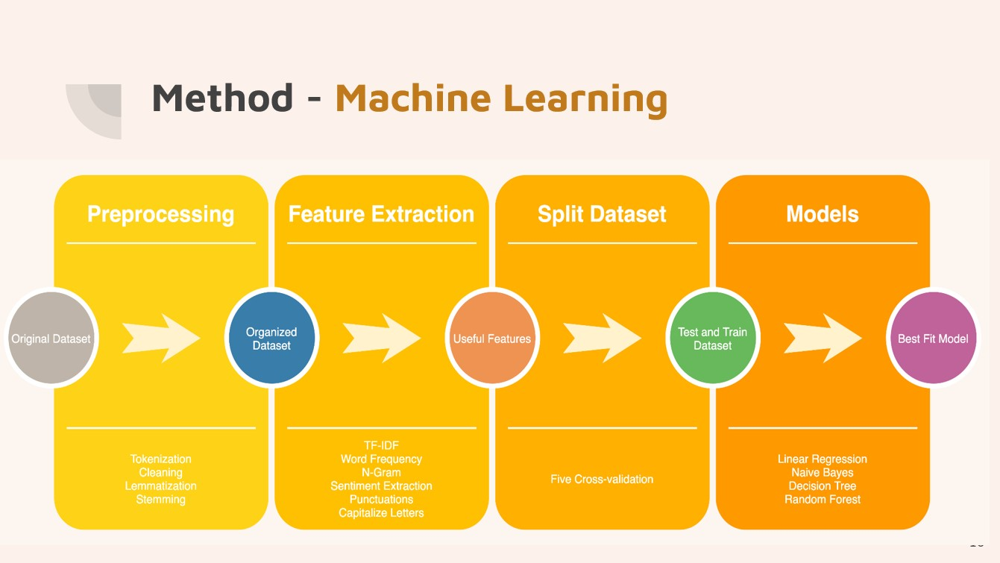Results 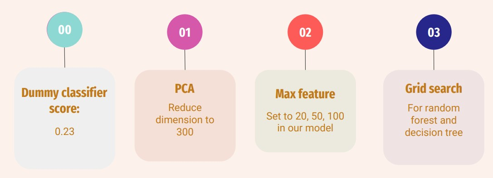 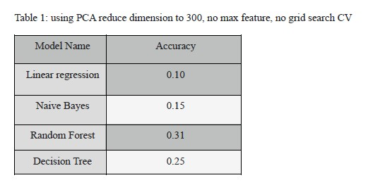 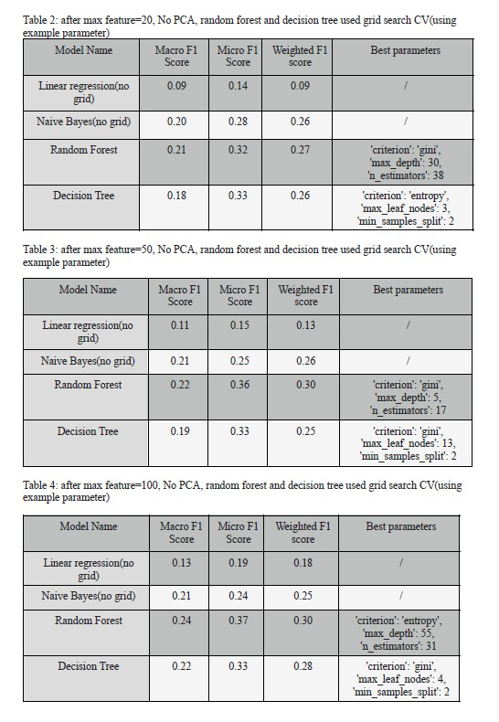
We got a dummy classifier score of 0.23. DummyClassifier is a classifier that makes predictions using simple rules. It can be used as a baseline to compare with real classifiers. Then, we used PCA, max feature and grid search to generate our results. Max feature is creating a feature matrix out of the most given number of frequent words across text documents. While using PCA to reduce dimensions to 300, we found that the linear regression model has the lowest accuracy, and the random forest model has the highest accuracy, shown in Table 1. Then, we tried to use max-feature and grid search. When we set the max feature value to 20 and apply grid search to random forest and decision tree, the accuracy for random forest and decision tree are high and close to each other, which means that both models perform well when the max feature is 20. When we set the max feature to 50 and use grid search for the last two models, the f1 score for random forest is the highest. Similarly, if we set the max feature to 100, we found that the random forest model still has the highest f1 scores. Therefore, the random forest model has the best performance among 4 models, but the decision tree’s accuracy will approach the random forest or even be higher, when we have a small max feature value. The linear regression model has low scores for all the four cases.
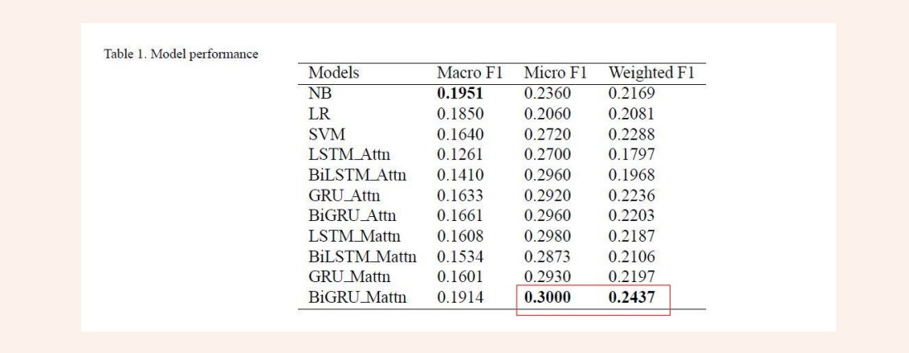Furthermore, our group found a paper called Suicidal risk identification in social media that was published this year and used the same dataset we used. We got 0.37 (Micro F1) and 0.30 (Weighted F1), which is higher than the best result in this paper. However, one way to get a better performance on this dataset can be having more data. The current dataset has 500 data points with 5 labels. Increasing the number of datapoints can lead to better model predictions.
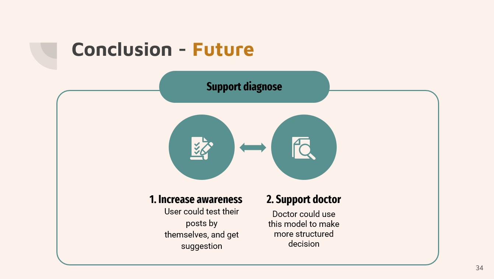In the application, we can let the user enter a social media address or username, and it will then automatically capture the user's social media posts and give their level of depression. This model can help people who are concerned that they may be depressed. If the classification results indicate the possibility of depression, then the user is advised to go to the hospital for further treatment and seek professional advice from their doctor. This model could help to support doctors in making more structured decisions. Currently, the clinical diagnosis of depression is based on the ICD-10 or DSM-V diagnostic criteria for depression, combined with patient interviews, scales and physician experience. This approach is only applicable to one-on-one testing and can easily lead to misdiagnosis due to subjective factors such as patient cooperation and physician proficiency. Due to the lack of patient awareness and early screening tools, patients may have reached major depression after treatment. Therefore, we hope to use this model as an early screening tool to detect depression as early as possible rather than discover depression in the late stage.
 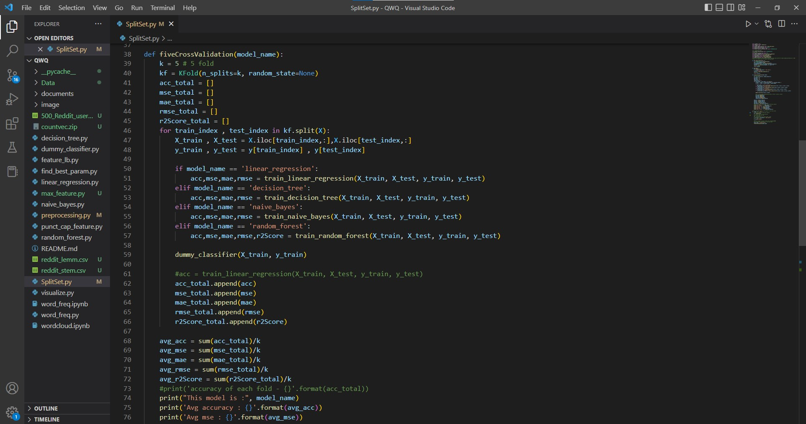
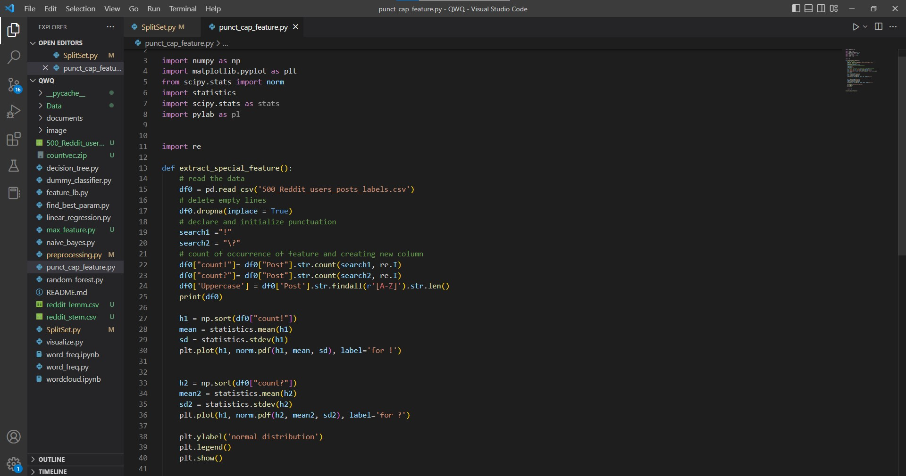
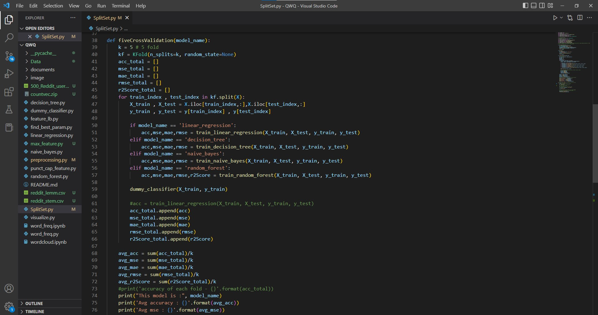
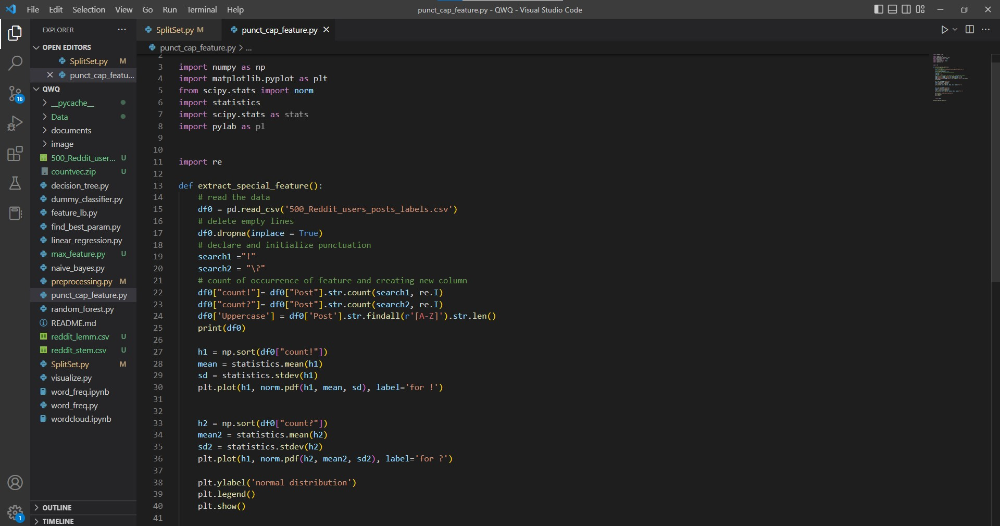